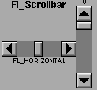

Class Hierarchy
Fl_Slider
|
+----Fl_Scrollbar
Include Files
#include <FL/Fl_Scrollbar.H>
Description
The Fl_Scrollbar widget displays a slider with arrow buttons
at the ends of the scrollbar. Clicking on the arrows move up/left and
down/right by linesize(). Scrollbars also accept
FL_SHORTCUT events: the arrows move by linesize(), and
vertical scrollbars take Page Up/Down (they move by the page size minus
linesize()) and Home/End (they jump to the top or bottom).
Scrollbars have step(1) preset (they always return
integers). If desired you can set the step() to non-integer
values. You will then have to use casts to get at the floating-point
versions of value() from Fl_Slider.

Methods
Creates a new Fl_Scrollbar widget using the given position,
size, and label string. You need to do type(FL_HORIZONTAL) if
you want a horizontal scrollbar.
Destroys the valuator.
This number controls how big the steps are that the arrow keys do. In
addition page up/down move by the size last sent to value()
minus one linesize(). The default is 16.
The first form returns the integer value of the scrollbar. You can get
the floating point value with Fl_Slider::value(). The second
form sets value(), range(), and slider_size()
to make a variable-sized scrollbar. You should call this every time
your window changes size, your data changes size, or your scroll
position changes (even if in response to a callback from this
scrollbar). All necessary calls to redraw() are done.